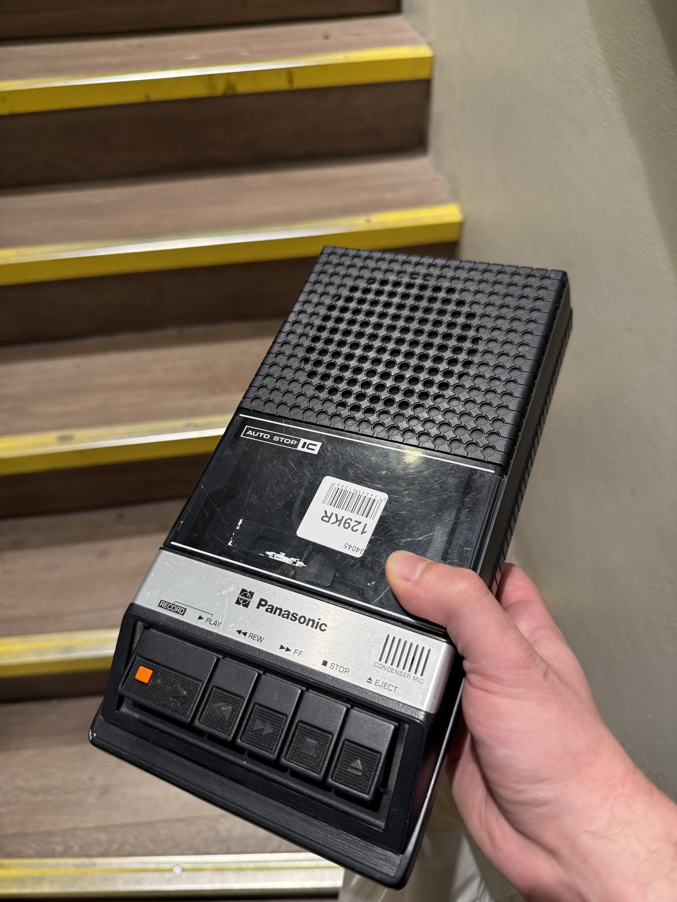
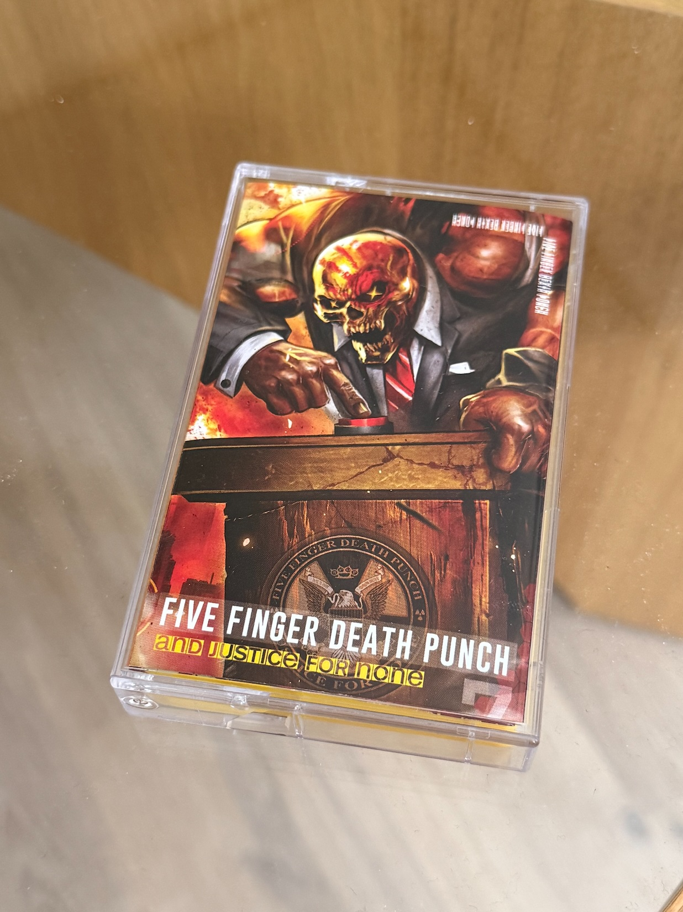
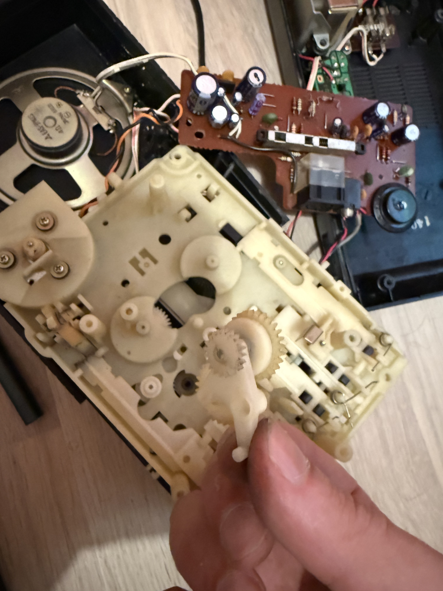
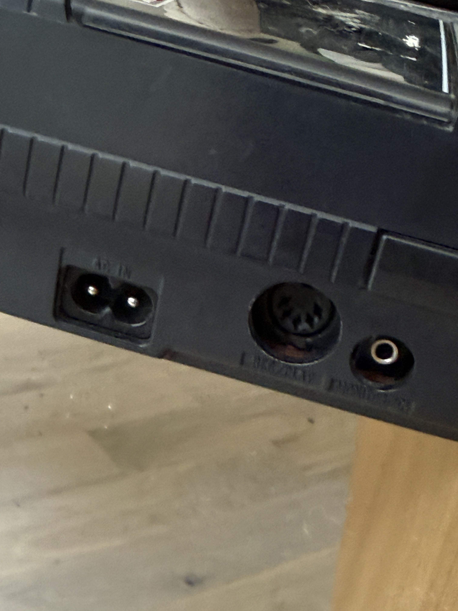
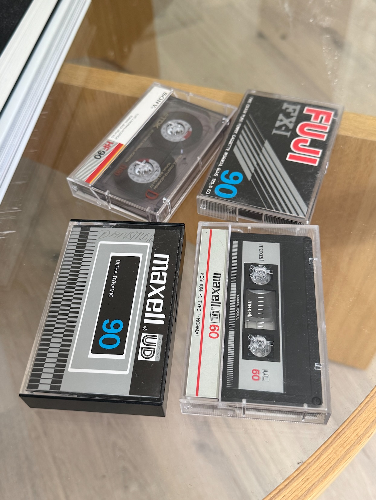
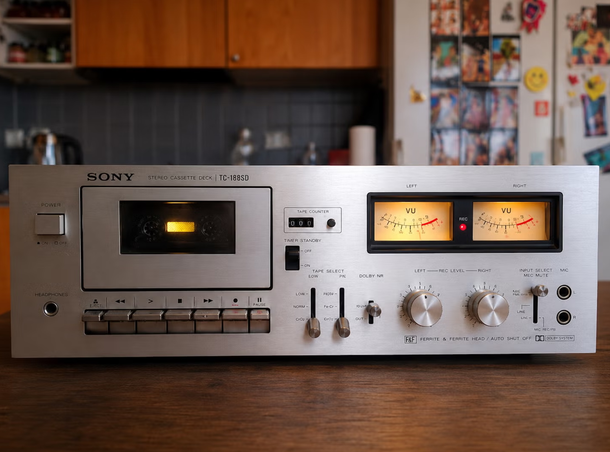
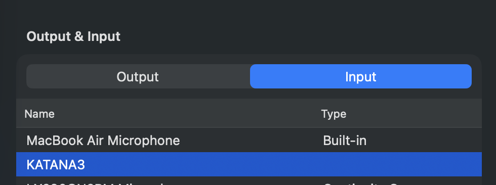
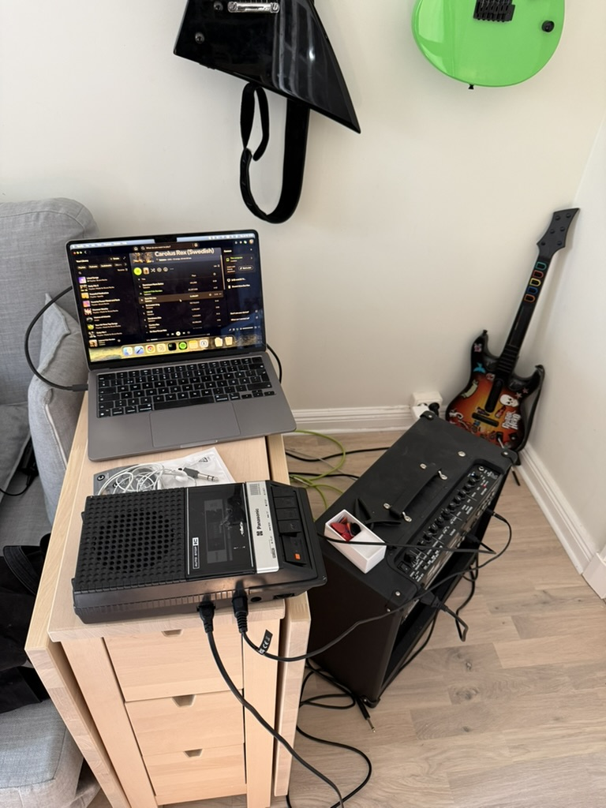

I tried to record music onto a cassette tape using modern tech
I've always been a fan of retro tech, and this became even more true after AI swooped in and removed the soul and passion of all modern technology.
I often go to my local second-hand stores to look at their games section in search of old gems, but I also pass by their electronics section because that's usually where they put the retro consoles themselves. This time however I found something much cooler: a 1978 Panasonic RQ-2106 shoebox cassette tape recorder for less than 10 euros. I remembered that my dad used to have this huge cassette deck that I was always playing with despite having no idea what the knobs did, so I couldn't let this one pass.

I happened to already have a Five Finger Death Punch cassette that I got on another occasion, so I could use that to test it out. After popping in the batteries, I was very happy to see that it still worked perfectly apart from the fast-forward button acting a bit weird. This made me appreciate how things were built to last back then; my modern sneakers can't last 6 months without falling apart, yet this piece of tech from 1978 that must have been thrown around all over the place still worked as it should. The sound does suck, but that was also the case back then as cassettes were never a good medium for music in the first place.

Before adventuring into recording new content, I wanted to fix the weirdness in the fast-forward button. One thing that is common among these decks is that they are almost entirely mechanical, with almost everything being driven by springs and cogs. I happened to find a video demonstrating how the mechanism worked for this particular model and this helped me understand that the issue was that one of the cogs in the fast-forward "circuit" happened to snap in half when I was playing with the device earlier. Not a fun start, but after gluing it back into one piece, I was able to put everything back together and the button now worked as it was supposed to.

Now, when it comes to recording, this device can do it in two ways: either via the built-in microphone, or via a 5-pin DIN port on the side:

I knew that one of my local second-hand stores held a box full of random cassettes, so I made a trip there to snag a few generic ones to test the recording features. I eventually learned that high-gain cassettes are better for music recording, but I didn't know this back then so I just got a bunch of regular ones:

Recording via the built-in microphone was simple enough (the sound still sucked, but this wasn't a surprise), but what I really wanted to do was record actual music to it. So I needed to convert that ancient DIN port into either USB or a 3.5mm headphone jack to be able to plug it into my Mac.
A quick Amazon search revealed this adapter, which I bought and received after a couple of days. Now, I thought this would be as simple as just plugging it into my Mac and playing songs via Spotify, but it turned out to be slightly harder than that.
Although plugging it did work in a sense, the volume was so low I could barely hear it even though both the Mac's and Spotify's outputs were maxed out. After some research it turned out that this was exactly the purpose of those knobs I didn't understand when I was a kid: the bigger cassette decks like the one pictured below have all sorts of signal leveling controls to enable you to get a good sound, but this shoebox one didn't have anything of that sort. So I somehow needed to amplify the output signal, but I didn't want to have to download the individual audio files or any audio editing software of that sort, I wanted to be able to do that straight from the Spotify stream.
Having some experience with musical instruments I knew that I could use external audio interfaces to do this, and luckily for me my guitar amp (Boss Katana Gen 3) doubles as a DAW! So in theory if I could plug the amp in the middle of this setup, I could use the amp's own controls to crank up the signal and get a good recording. I didn't think this was possible at first since I had never used the USB-C port in the amp as an audio input, but it turned out I could for sure use the amp as an input from my Mac!

I then used an adapter to connect the other recorder's adapter's 3.5mm port to the amp's headphones output port, and the result was that I could now use the amp's panel controls to crank up the audio even further. This resulted in a "proper" recording, so now all I had to do was play any playlist and leave it recording while it played. The resulting sound sucked just as much as the "original" cassettes I had which was unsurprising, but now they were listenable!

Despite not being the best medium for music, I find cassettes to be a really impressive piece of technology particularly due to how easy it is to write content to them. Even in today's world of modern iPhones, there's nothing that lets you easily jump to a specific part of an audio or video and re-record sections of it in the same way you can with a cassette. Plus they just look really cool, and now I have a way to listen to music without my phone :)